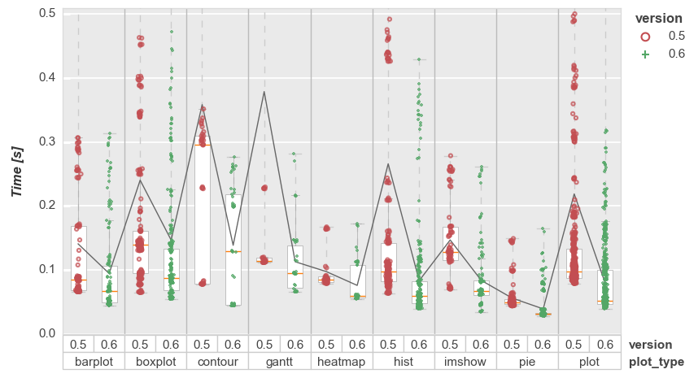

Changelog#
0.6.0#
plotly support added (including boxplots!)
Major plotting speed improvements with matplotlib
Plot type
Avg % Speed Up *
barplot
26.3
boxplot
28.2
contour
38.3
gantt
23.8
heatmap
21.4
hist
38.9
imshow
41.2
pie
29.1
plot
38.2
*based on unit test benchmarking
Refactor of input data structures for better handling of image data
Improved (but still limited) support for bokeh
Compatibility for newer releases of dependent packages like numpy, matplotlib, etc
New warnings provided for kwargs that are not supported
Enhanced gantt charts (matplotlib only)
Support for plotting x-y data without a DataFrame (just cause)
Changes to gray.py theme for smaller font sizes; original settings available via theme gray_original.py
0.5.4#
Bug fixes
0.5.2#
Remove feature that restores mpl rcParams at end of plot as it can break interactive plotting results
0.5.1#
Bug to fix bokeh plots
Adjust save/show/inline behavior slightly.
return_filenameandprint_filenamenow only work when image is actually saved to disk
0.5.0#
- Major speed improvements achieved for matplotlib engine. Actual time reduction depends on the plot type and the number of subplots, data sets, etc. Based on the plots included as unit tests:
~30% increase for standard xy plots
~40-50% increase for barplot, boxplots (sans advanced features like violins), contours, and heatmaps
- New plot types added:
gantt
imshow (preferred choice for display of image data over heatmap)
pie
Significant cleanup of legacy code and refactoring of
DataandLayoutclassesFull documentation of kwargs API
- Support added for:
upper- and lower-control limit area shading
marker size definition via a column in the DataFrame (allows emphasis of specific points)
cdf and pdf conversion with
fcp.histrolling mean in
fcp.bar
Numerous bug fixes
0.4.3#
fix heatmap but when DataFrame column names are of type
objectbut are actuallyint
0.4.2#
handle change to pandas xlsx engine for >=v1.2
remove unintentional overload of
input
0.4.1#
update to ignore warnings with v3.3 of MPL
0.4.0#
legend:
allow placing legend below plot (
legend_location=='below'orlegend_location==11)fixes for figure grouping and multi-column plots
heatmap:
font and font size fixes
themes:
beautification of “white” theme
allow switching of themes via keyword at the plot call
allow overloading of default color list in theme file
other:
fixed requirements so it will import after install in clean environment
deal with iterticks warning from
matplotlibversions >= 3.1added
save_datakeyword to dump a subset of the plotted data only from the originalpandas.DataFramefile extension bug fix
filter improvements (allow “not in” list)
added option to disable alphabetical sorting of data and plot based on the order in which data appears in the original
pandas.DataFrame
0.3.0#
old and deprecated